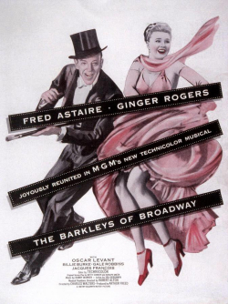

From my Facebook archives, December 23, 2014:
We re-watched The Barkleys of Broadway over the weekend. This was the tenth and final film Ginger Rogers and Fred Astaire made together. The first nine were all done at RKO from 1933 to 1939. Barkleys was done at MGM in 1949.
Since first discovering Fred & Ginger just over a year ago, we've now seen all their movies at least twice--except for the first, Flying Down to Rio (which isn't really a 'Fred & Ginger' movie, though they steal the show).
Barkleys is rather different from most of their movies. It's the only one in color. It's the only MGM musical (and the MGM style is quite apparent). It was originally designed for Fred and Judy Garland as a follow up to Easter Parade. And it's a decade after Fred & Ginger's last collaboration.
Many parts of this film are magical. A few don't work for me. Overall it is a delightful film. You can't help but feel good after watching these two.